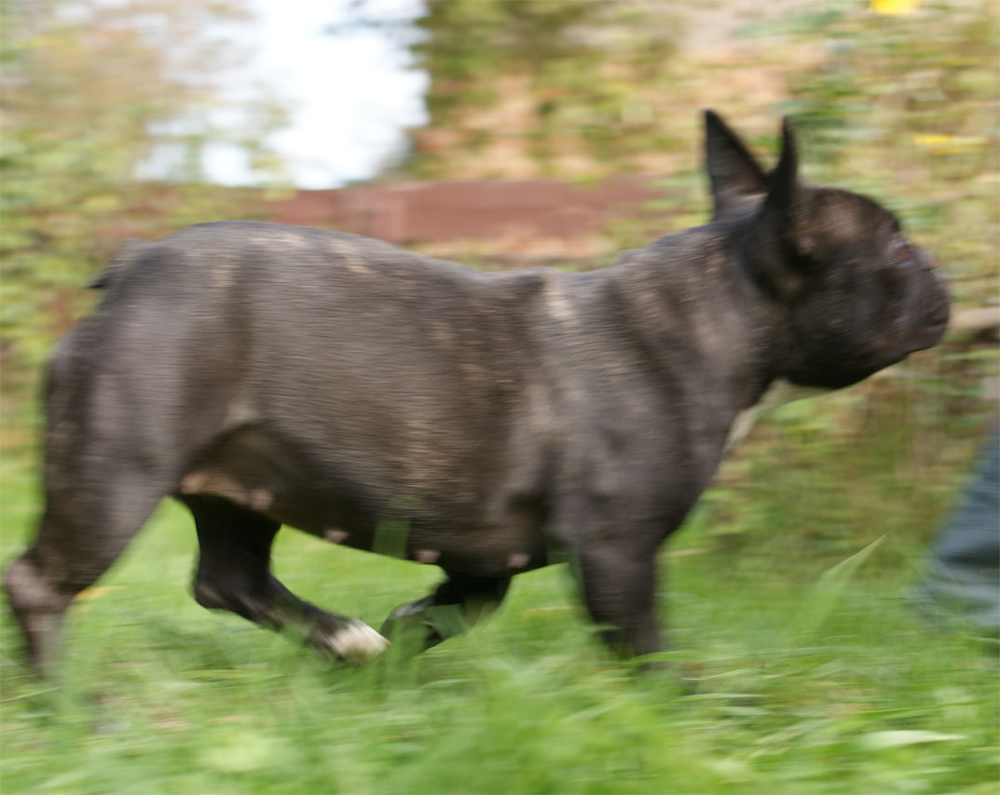
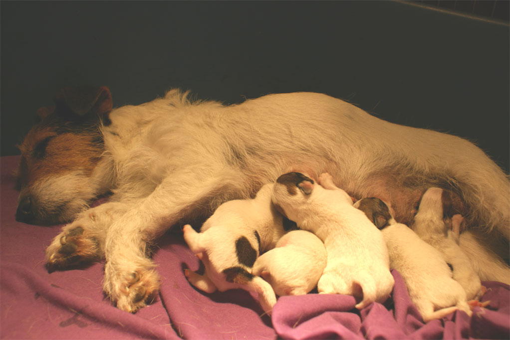
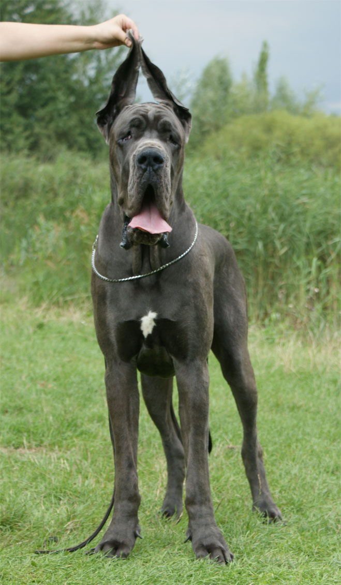
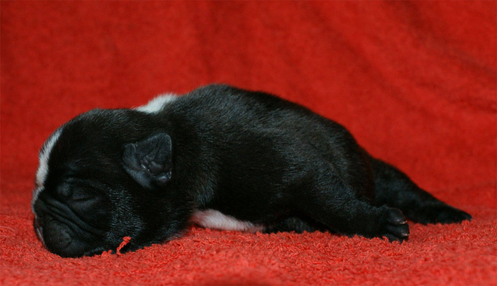
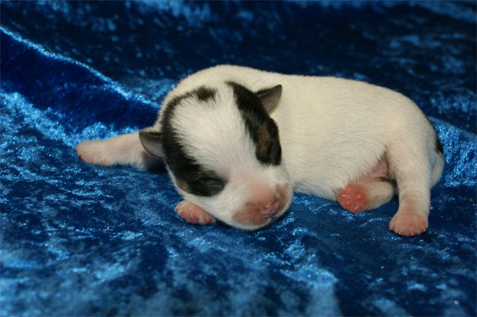
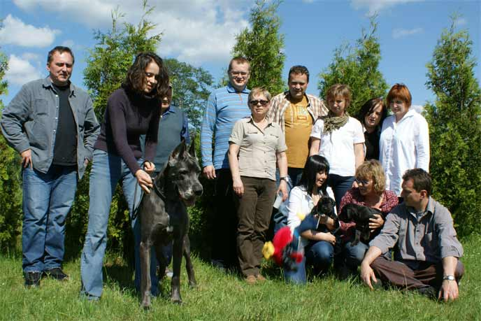
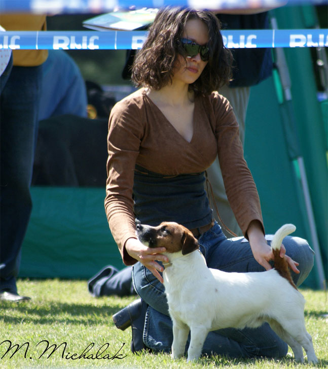
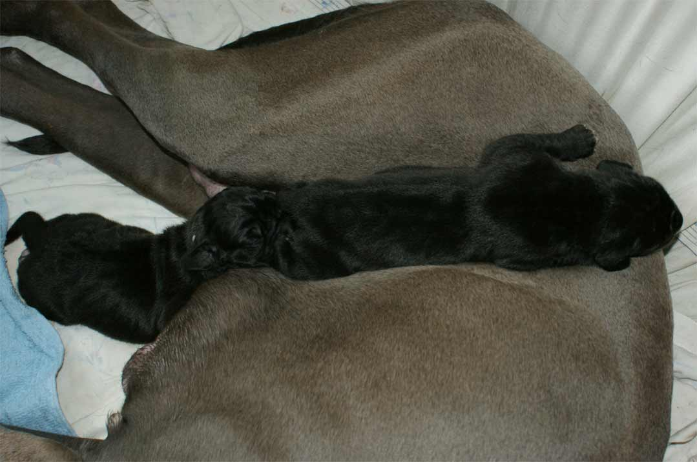
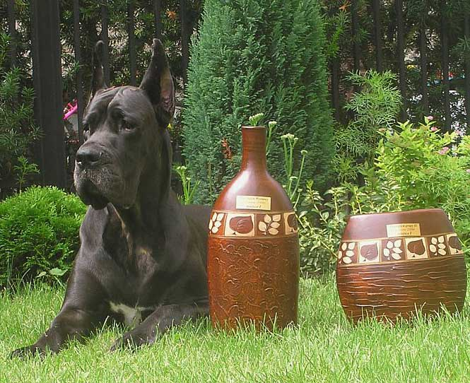

18-19.12.2010 - 2 x CACIB shows in Vilnius - All our young dogs ( JAROD, IMAGINE and NOIR NOTE Balao ) had begun Lithuanian Championship

06.12.2010 - Smooth and broken pups out of Ch.Pl. VENDETTA LAIRDSLEY ons Eiland & FIRST FLASH z Jerene were born. We have 3 lovely males and 2 georgeus females. All pups are tan-white like their father

13.11.2010 - International dog show in Kielce - JADE Balao - CACIB14.11.2010 - Kielce - JAROD i KALOO LILIROSE get CAC, Res. CACIB
11.09.2010 - National dog show in Warszawa - JAROD Balao - CAC, BOS, BOB
PROVOCATIV Balao - J.CAC., INFERNO Balao CAC, BOS, BOB
 21 & 22.08.2010 - Two International dog shows in Uøhorod ( Ukraina ) -
MICHELLE MA BELLE 2 x CAC, 2 x CACIB. On this shows she gained title
Champion of Ukraine.
21 & 22.08.2010 - Two International dog shows in Uøhorod ( Ukraina ) -
MICHELLE MA BELLE 2 x CAC, 2 x CACIB. On this shows she gained title
Champion of Ukraine. 23.07.2010 - Smooth pups out of Ch.Pl. Stjarnlides Jack
LOREDANA and FIRST FLASH z Jerene were born. We have 3 lovely males and
2 georgeus females
23.07.2010 - Smooth pups out of Ch.Pl. Stjarnlides Jack
LOREDANA and FIRST FLASH z Jerene were born. We have 3 lovely males and
2 georgeus females

17.07.2010 - NOIR NOTE Balao & CYPIS Draczyn are parents of "O" litter. If you are wonder how pups look like, please take a lookLITTER "O"

15.07.2010 - Int.Ch. FOR PLEASURE of the Hunters Pride and Pretorium I'M CEEANNE become parents of "T" litter. 11.07.2010 - International dog show in Warszawa -
as always very lucky for us :) INFERNO Balao - CAC, CACIB, JADE Balao -
CAC, CACIB, BOB
11.07.2010 - International dog show in Warszawa -
as always very lucky for us :) INFERNO Balao - CAC, CACIB, JADE Balao -
CAC, CACIB, BOB13.06.2010 - National dog show in Lublin - It was good day for both our smooth coat Jack Russell's FIRST FLASH Z Jerene - CAC, BOS, Stjarnlidens Jack LORENANA - CAC, BOS - finished CH.PL.
KALOO LILIROSE Balao - JCAC, BOB - finished Polish Junior Championship
 06.05.2010 - International dog show in Leszno was very lucky for all our dogs - MICHELLE MA BELLE - CAC, CACIB,
BOB - she finished INTERCHAMPIONSHIP.
06.05.2010 - International dog show in Leszno was very lucky for all our dogs - MICHELLE MA BELLE - CAC, CACIB,
BOB - she finished INTERCHAMPIONSHIP.JAROD, did it again ;p Junior Winner, Junior BOB and had finished Polish Junior Championship
KALOO LILIROSE - Junior Winner
05.06.2010 - International dog show in Leszno - JADE Balao - CACIB, BOB

03.06.2010 - JASMIN Medium - Jaga, had birthday party. Yesterday, she had finished 10 yeras.
23.05.2010 - National dog show in Radom- FIRST FLASH Z Jerene - CAC, BOS
05.05.2010 - Two black males was born.It is the first such a cover in Poland. Father is french, fawn male AMADEUS des Pettites Vernieres, proud mother, blue Int.Ch. NO DOUBT Balao.
 01.05.2010 - International dog show in £Ûdü- JADE Balao - CACIB, BOB
01.05.2010 - International dog show in £Ûdü- JADE Balao - CACIB, BOB02.05.2010 - £Ûdü - JAROD repeated his succes form Opole. Junior Winner, Junior BOB
25.04.2010 - International dog show in Opole - NOIR NOTE Balao - III excellent, there were 19 others young females in class.
24.04.2010 - International dog show in Opole - JAROD Balao - Junior Winner, Junior BOB
24.04.2010 - Opole - JADE Balao - CACIB, BOB
26.03.2010 - International dog show in Katowice - JADE Balao - CACIB, BOB
21.02.2010 - Presov - MICHELLE MA BELLE - CAC, CACIB, East Winner 2010
13.02.2010 - International dog show in RzeszÛw - JADE Balao - CACIB, BOB, IV BOG

MICHELLE MA BELLE BalaoGreat Dane Polish Derby Winner'09